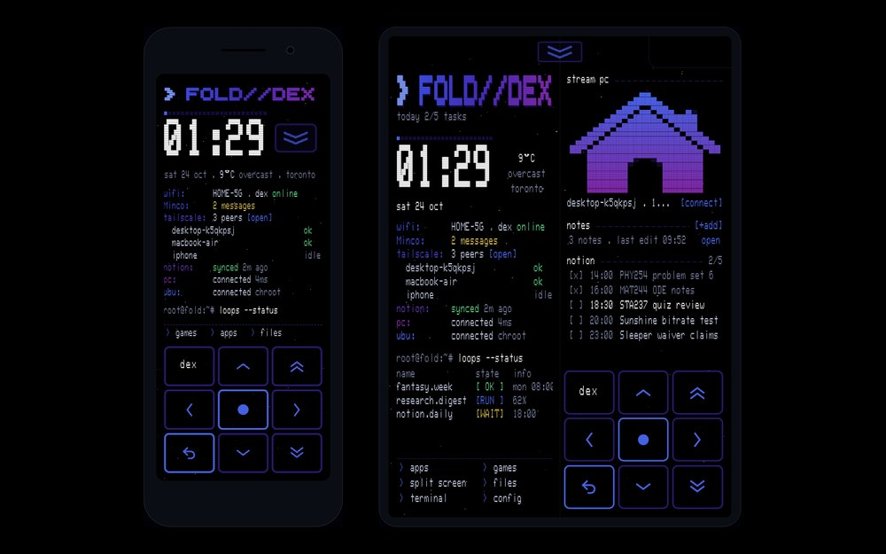
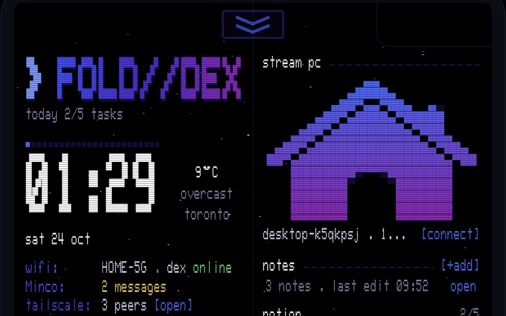

Goals
- Game emulator: PS1 and PSP games, plus Zelda through Ship of Harkinian, all in one drawer, with a d-pad that's always on screen so it plays like a handheld
- Scheduler: my Notion tasks for the day right on the home screen, and I can tick them off from the phone
- Notetaker: quick notes, typed or by voice, that end up in Notion
- Connecting to my other stuff: SSH from the phone into my PC and from the PC back into the phone, Moonlight to stream the PC, and Tailscale holding it together so it works off home wifi too

